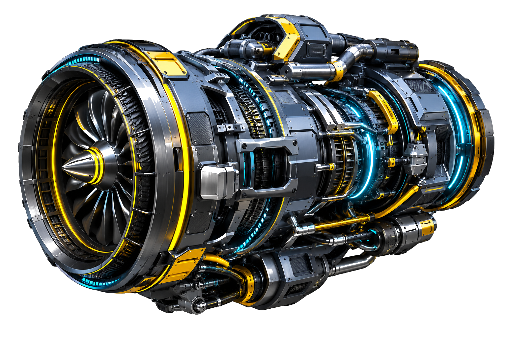

JT · CAD
Complex assemblies
Import and inspect engineering structures while preserving hierarchy and metadata where supported.
A planned Windows-first 3D file-format library and toolkit around a C# core and framework. Today: a validated JT 9.5/10.5 reader, CLI and export tools. The WinUI 3 client and additional formats are roadmap items.

The open-source foundation is a JT 9.5/10.5 reader with a headless CLI: header/TOC parsing, LSG scene graph, tessellated meshes, scene transforms, metadata inspection, bulk scanning, OBJ/STL/PLY/glTF/GLB read/write export and validated corpus tests. There is no released WinUI desktop app, no JT writer and no general multi-format reader yet. See the source repository and product brief.
Feature concepts illustrate how PolyCore could bring import, inspection, conversion and optimization into one Windows workspace.

Import and inspect engineering structures while preserving hierarchy and metadata where supported.

Compare geometry and surface representations.

Proposed tools for reducing complexity and preparing assets.

Queue multiple files and apply repeatable conversion profiles.
Conceptual metrics for processing time, memory and scene complexity.
Concept visuals only — the depicted capabilities are planned and not presented as shipped functionality.
PolyCore is planned around a C# core and framework, with the Windows desktop client built from a WinUI 3 template. Format readers and writers are modular services with explicit capability boundaries.
Start with file access and inspection, then unlock higher-value processing features as your product and pipeline needs grow.
Inspect meshes, transforms, scene graphs, materials and metadata through a consistent model.
Explore editing →Build repeatable conversion flows with profile-driven import and export options.
Explore conversion →Reduce complexity and prepare assets for target runtimes, applications and devices.
Explore optimization →
Automate repetitive file operations and build pipeline-friendly workflows.
Explore automation →Profile workloads, inspect memory usage and measure conversion throughput.
Explore performance →
Deployment options, policy controls, licensing and integration support.
Explore enterprise →The format matrix distinguishes read, write, edit and advanced data coverage instead of claiming blanket compatibility.
Simple entry points, optional modules, clear ownership of data and predictable errors.
C# core and framework, with a native Windows client built on WinUI 3.
Windows-first architecture. Additional platforms may be evaluated separately.
Headless conversion, batch jobs, structured logs and machine-readable results.
Commercial structure is a proposal and can be adjusted after validation with target customers.
Read, inspect and learn the core library.
For individual developers and creators.
For teams and production workflows.
For large-scale and embedded integrations.
Review the SDK concept, compatibility matrix and commercial editions.